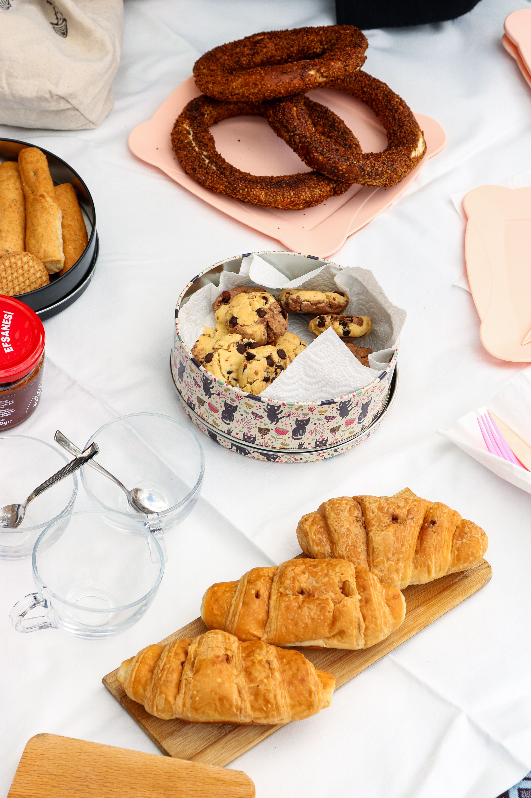
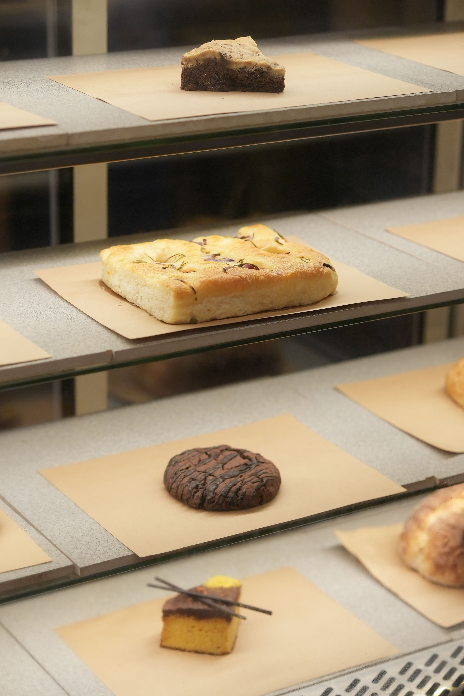
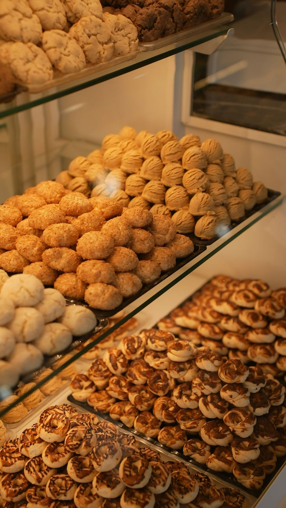

Visit Sarah's Bakery, LLC
Bakery and dessert shop at The Bridge Road Shops, with takeout and grab-and-go treats.
Address: 1011 Bridge Rd, Charleston, WV 25314
Hours: Tuesday-Friday 11am-6pm, Saturday 11am-4pm, closed Sunday and Monday.
Phone: +1 304-343-2253
Gallery



All gallery photos are stock photos, labeled as such. They show the kind of work and setting described on this page, not this business.
Contact
Sarah's Bakery, LLC serves Charleston. Questions? Call +1 304-343-2253.